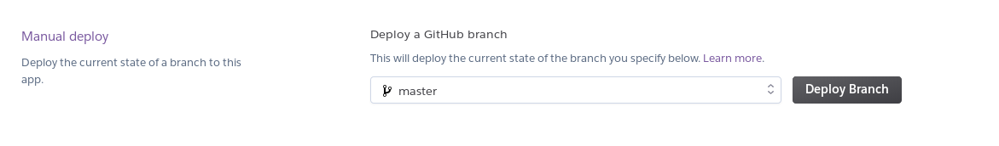

TP #3 - Pages d'administration
Configuration du projet
Si ce n'est pas déjà fait, ajouter les dépendances :
<!-- Support du templating JSP -->
<dependency>
<groupId>org.apache.tomcat.embed</groupId>
<artifactId>tomcat-embed-jasper</artifactId>
<scope>provided</scope>
</dependency>
<!-- Support de JSTL -->
<dependency>
<groupId>javax.servlet</groupId>
<artifactId>jstl</artifactId>
</dependency>
- Compléter le fichier
application.propertiespour configurer leViewResolver:
spring.mvc.view.prefix = /WEB-INF/views/
spring.mvc.view.suffix = .jsp
Branche de développement & déploiement
Pour faciliter le travail de revue de code, chaque développeur va déployer sa branche de développement en ligne.
Créer votre branche de développement (exemple
<entite>-web-admin) à partir de la branchemaster.Envoyer votre branche sur Github.
Démarrer l'application en local via la classe
EvalMeBackApplication.Vérifier que la page
http://localhost:8080/infosfonctionne.
Déploiement Heroku
Déployons à présent la branche sur Heroku.
- Aller sur le site d'Heroku : https://www.heroku.com/ et Cliquer sur
Signup.

- Remplir le formulaire d'inscription.

- Cliquer sur
Create new App.

- Donner un nom unique à l'application : exemple
<entite>-web-admin.

- Cliquer sur Github, se connecter à Github
- Sélectionner votre projet :
evalme-back.

- Activer le déploiement automatique en cliquant sur
Enable Automatic Deployssur votre branche-web-admin .

- Cliquer sur
Deploy Branchpour la branche-web-admin .

- Pour visualiser les logs, cliquer sur
More > View logs.

Le lien de l'application sera à présenter à chaque Pull Request.
Ecrans CRUD
Réaliser la fonctionnalité de CRUD sur votre entité en plusieurs itérations :
Itération 1 : Lister
Itération 2 : Créer
Itération 3 : Mettre à jour
Itération 4 : Suppression.